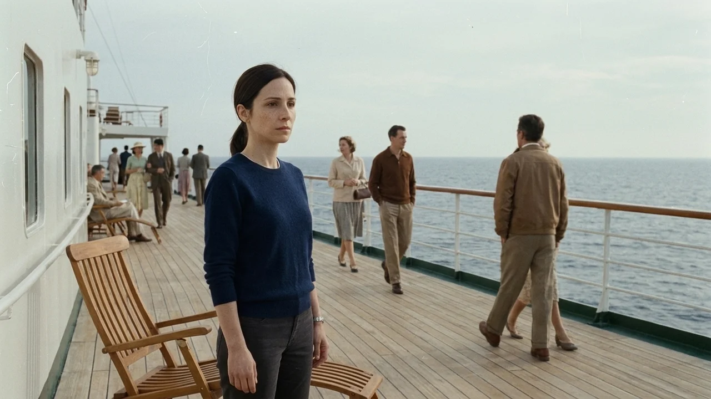
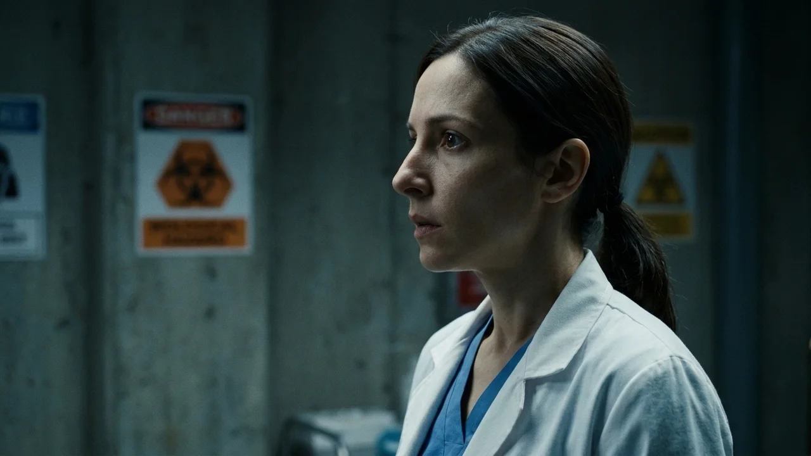
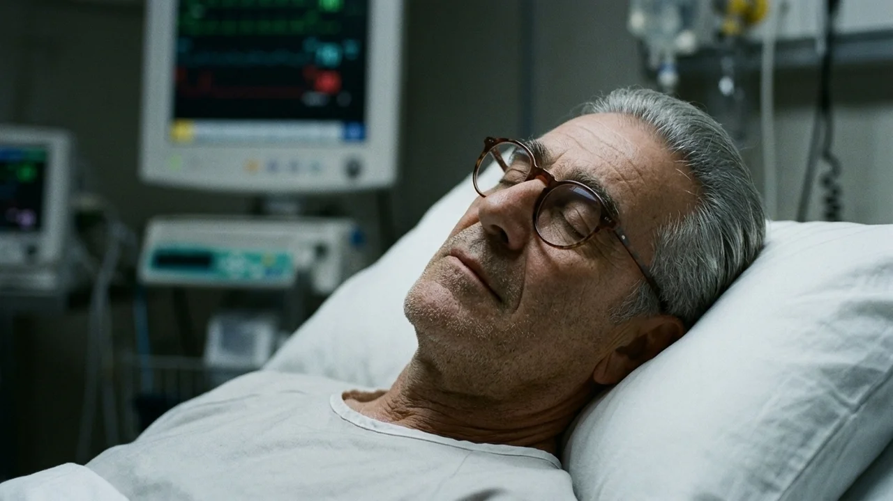
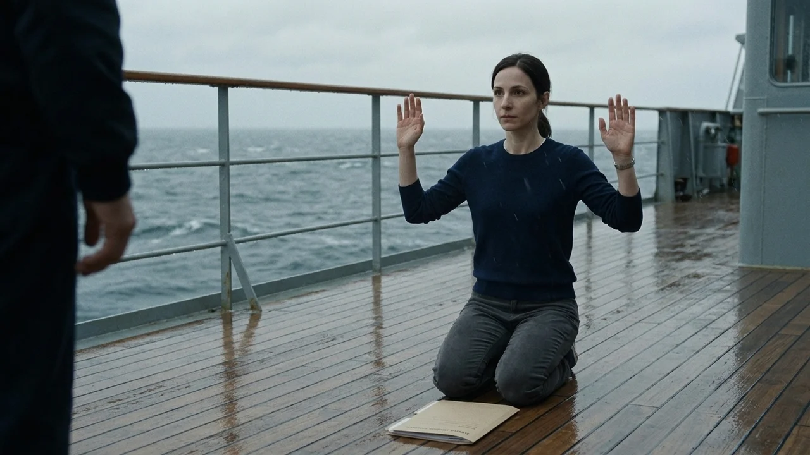
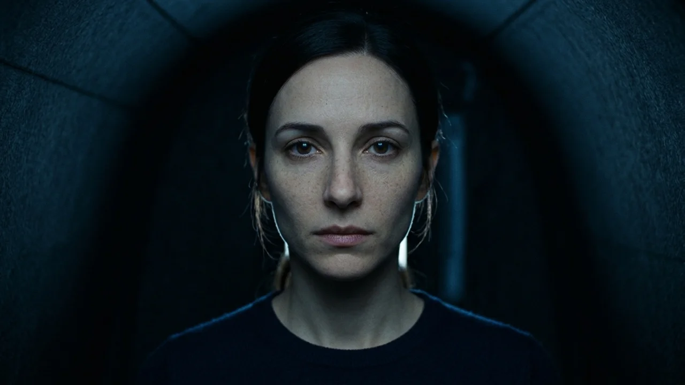

El té se había enfriado en la mesita de la cubierta de popa. Elena Aróstegui apoyaba las manos en la barandilla de acero pulido, contemplando la estela blanca del *Oceanic Majestic* sobre el azul denso del Atlántico norte. Tres días de navegación desde Southampton con destino a Nueva York. Tres mil doscientas personas a bordo y el rumor continuo de turbinas vibrando bajo sus zapatos de lona. Para Elena, tras catorce meses analizando permafrost polar en Noruega, aquel viaje era su primer descanso en dos años. En el salón sonaban los primeros acordes de un cuarteto de cuerda.
El alboroto comenzó junto al buffet: un tintineo violento de copas al estrellarse contra la tarima. Cuando Elena cruzó las puertas acristaladas, encontró a un camarero joven arrodillado entre restos de vajilla rota. El muchacho se apretaba la garganta con ambas manos, tosiendo una saliva sanguinolenta muy oscura que salpicaba el mantel. Tenía los ojos desorbitados, inyectados en sangre desde los lagrimales hasta el iris, y su respiración sonaba como un fuelle roto.
Elena se arrodilló a su lado sin dudarlo.
—Tranquilo. Respira despacio —le dijo, apartándole el pelo empapado de sudor—. Soy médico.
El chico intentó articular una palabra, pero sus cuerdas vocales solo emitieron un siseo áspero. Su frente quemaba al tacto con una fiebre abrasadora. Dos metros más allá, una mujer mayor sentada en un sillón de terciopelo comenzó a convulsionar con el mismo estertor metálico.
La enfermería de la cubierta dos olía a alcohol yodado y a cloro caliente. Tomás Carvajal, el médico jefe de la nave, se ajustaba la mascarilla quirúrgica con manos torpes ante seis camillas colapsadas en el pasillo.
—En treinta años de mar jamás vi nada igual —dijo Tomás, señalando a los enfermos—. Cuarenta y dos ingresos en cuatro horas. Cefalea frontal severa, hemoptisis espontánea y fallo respiratorio en cuestión de noventa minutos.
Elena examinó la placa torácica de uno de los oficiales de máquinas que acababa de perder el conocimiento. Sus pulmones estaban prácticamente opacados por un edema alveolar masivo.
—No es una bacteria alimentaria, Tomás —afirmó ella en un susurro, mirando las rejillas plateadas del techo—. Escuche eso.

El flujo del sistema de climatización soplaba con fuerza constante, distribuyendo el aire templado por los conductos que unían las cabinas de pasajeros con las estancias del personal.
—El aire recirculado —murmuró Tomás, dejando caer los brazos con desaliento—. La nave filtra el ochenta por ciento para ahorrar combustible en la travesía. Si el patógeno viaja en aerosoles microscópicos, lo estamos bombeando a cada camarote cada cuatro minutos.
—Tenemos que apagar la recirculación central y precintar los sectores ahora mismo —exigió Elena—. Utilizar ventilación forzada directa al exterior.
—El capitán ya lo ha intentado. Los controles del sistema informático están bloqueados en modo crucero desde el puente y el jefe de máquinas acaba de caer inconsciente en la sala de calderas.
Tomás se detuvo en seco. Se llevó la mano enguantada al pecho y soltó dos golpes de tos secos, rasposos. Al apartar el dorso de la mano de su barbilla, una mancha pardo-rojiza empapaba la celulosa de su mascarilla. Miró a Elena con una mezcla de sorpresa y resignación a través del cristal empañado de sus gafas.
—Tomás, siéntese en esa silla —le ordenó ella, sujetándolo por el codo.
—Tú has estado en contacto directo con los primeros diez pacientes sin guantes ni traje —observó el veterano, mirándola con ojos vidriosos—. Llevas horas respirando este mismo aire concentrado. ¿No sientes opresión en el pecho? ¿Ni ardor en los ojos?
Elena se llevó los dedos al cuello. Su pulso era pausado, sesenta y cuatro pulsaciones regulares por minuto. Respiró hondo y el aire entró en sus bronquios con una limpieza insultante.
Al quinto día de navegación, el silencio devoró la música. Las autoridades marítimas impusieron una cuarentena biológica estricta: ninguna embarcación podía acercarse a menos de doce millas y ningún puerto del Atlántico autorizó el desembarco bajo amenaza de intercepción armada.

La megafonía del puente de mando repetía en bucle un mensaje grabado que nadie escuchaba: *«Permanezcan en sus cabinas. El equipo médico está distribuyendo asistencia. Eviten los pasillos comunes»*.
Pero ya no quedaba equipo médico. Tomás yacía en la última cama articulada de la unidad de cuidados intensivos, conectado a una botella de oxígeno que siseaba con un murmullo agónico. Las hemorragias petequiales le cubrían las mejillas y el cuello como un velo de ceniza oscura.
—El maletín de aluminio de la taquilla doce —consiguió susurrar Tomás, señalando hacia el laboratorio auxiliar—. Ahí están los reactivos de tipificación celular rápida y la centrífuga portátil para los análisis de ADN del pasaje preferente. Hazlo tú, Elena. Yo ya no veo la graduación del microscopio.
Elena asintió sin pronunciar palabra. Le humedeció los labios con una gasa estéril y le ajustó la manta de lana sobre los hombros rígidos.
Tomó muestras de esputo de Tomás, de un crupier que yacía sin vida en el box vecino y un frotis de su propia mucosa oral. Luego se extrajo diez mililitros de sangre de la flexura del codo, montó los tubos en la centrífuga y encendió el analizador de fluorescencia molecular.
Al enfocar el microscopio óptico, la muestra de Tomás confirmó el horror: viriones de corona dentada multiplicándose hasta reventar los macrófagos alveolares. La estructura era idéntica a la cepa fósil que su equipo había desenterrado ocho meses atrás de un testigo de hielo antártico en el fiordo de Kongsfjorden. Aquella muestra se había considerado térmicamente destruida tras un fallo eléctrico en el autoclave de la estación noruega.
Elena tragó saliva y colocó su propia preparación bajo el objetivo de inmersión en aceite.
Su sangre no contenía daño celular alguno. Sus hematíes eran discos perfectos, flexibles y rosados. Pero flotando libremente en su plasma y adherida a la superficie de sus células epiteliales faríngeas, la misma carga vírica se reproducía en concentraciones desorbitadas. Sus linfocitos de memoria habían asimilado el agente patógeno sin generar cascada inflamatoria ni necrosis tisular; su cuerpo no estaba combatiendo el virus: lo estaba alimentando, protegiendo y multiplicando a cada instante.
Una gota de sudor frío le resbaló por la sien hasta la comisura del labio.
—Dios mío —dijo para sí misma en la penumbra del laboratorio.

Ella no se había contagiado en la cubierta de popa. Ella no era una testigo milagrosa de la catástrofe. Ella era el paciente cero. Durante setenta y dos horas había caminado por los comedores, había conversado con los camareros, había soplado sobre el té caliente en las mesas compartidas y había leído en la biblioteca del barco, despidiendo con cada exhalación una nube invisible de muerte que los conductos de ventilación habían aspirado y distribuido a tres mil doscientas personas.
Un gemido débil la sacó de su estupor. Corrió hacia la cama de Tomás.
El viejo médico abrió los párpados con un esfuerzo supremo. Su mirada turbia buscó el rostro de Elena en la penumbra de la sala. Con los dedos agarrotados por la cianosis, rozó la manga del jersey de lana de la joven.
—Menos mal que estás a salvo, muchacha —alcanzó a murmurar con un hilo de voz—. Alguien... alguien tiene que quedar para contarlo.
Antes de que Elena pudiera articular una respuesta, la cabeza de Tomás cayó hacia el costado derecho sobre la almohada. Su respiración se detuvo de golpe. El silencio que inundó la enfermería fue más pesado que el zumbido de las olas rompiendo contra el casco de acero.
Para el noveno día de deriva en mitad de la fosa atlántica, el *Oceanic Majestic* era una ciudad flotante de metal frío y sombras inertes. Los generadores de gasóleo se habían apagado al agotarse los depósitos de servicio y solo el alumbrado de emergencia arrojaba un resplandor naranja sobre los corredores alfombrados.
Elena caminaba sin mascarilla por la cubierta de paseo, pisando cristales rotos caídos durante las últimas sacudidas del oleaje. A través de las puertas entreabiertas de las suites asomaban cuerpos inmóviles bajo mantas que ya no abrigaban a nadie. En el gran atrio central, donde tres días antes una fuente dorada derramaba agua templada, solo quedaba una balsa de líquido estancado cubierta por polvo grisáceo.
Subió al puente de mando. El timón permanecía bloqueado por el piloto automático, apuntando a una coordenada vacía en medio de la niebla polar. Las pantallas de navegación mostraban una veintena de llamadas de socorro no atendidas y un mapa con un círculo rojo parpadeante que delimitaba la zona de exclusión marítima internacional.
Elena se sentó en el sillón de cuero del capitán y contempló el horizonte plomizo a través de los amplios ventanales panorámicos. Se miró las palmas de las manos. Estaban calientes, perfectamente irrigadas, con las líneas de la vida intactas. Sentía una vitalidad casi insultante en sus músculos, una claridad mental absoluta que funcionaba como un castigo atroz: no había delirio que amortiguara el peso de la memoria.

Cada rostro que recordaba del primer día de travesía —el niño que jugaba con un coche de hojalata junto a los ascensores, la pianista de pelo rizado que afinaba su instrumento antes de la cena, el matrimonio de jubilados que celebraba sus bodas de oro en la mesa contigua— había dejado de existir porque ella había subido una pasarela de embarque con un billete de primera clase en el bolsillo.
El eco sordo de unas palas de rotor rompió la monotonía del viento.
Eran dos helicópteros de transporte pesado de la marina, pintados de gris mate sin distintivos nacionales visibles. Descendieron en vuelo rasante sobre la cubierta de proa, haciendo flamear las tumbonas abandonadas bajo la fuerza del rebufo.
Elena no corrió a recibirlos. Bajó despacio por las escaleras exteriores hasta la cubierta de paseo con la carpeta de plástico que contenía los gráficos del secuenciador y las muestras selladas en tubos de criogenia.
Ocho soldados con trajes presurizados de bioseguridad de color naranja brillante saltaron sobre la cubierta con fusiles de asalto en posición de alerta. Llevaban escafandras con visores tintados y equipos de respiración autónoma a la espalda. Detrás de ellos avanzaba un oficial médico con una caja de transporte hermética de titanio.
Al verla avanzar sola entre las sombras de la cubierta, dos de los soldados levantaron sus armas al hombro.
—¡Deténgase! —rugió la voz metálica del oficial a través del altavoz de su casco—. ¡Levante las manos y no se acerque más de diez metros!
Elena obedeció lentamente. Dejó la carpeta en el suelo de madera y se arrodilló sobre la tarima húmeda con las palmas abiertas hacia el cielo gris.
—No disparen —dijo con voz serena y vacía—. Todos a bordo han muerto. Menos yo.

El oficial se acercó con cautela, recogió los tubos de ensayo con una pinza articulada y los depositó dentro del contenedor estanco. Luego conectó un sensor de espectrometría portátil que emitió un pitido estridente y continuo en cuanto apuntó hacia la garganta de Elena. La pantalla digital del aparato se tiñó de rojo escarlata.
El oficial retrocedió dos pasos instintivamente, mirando a sus subordinados con un gesto de alarma indisimulable detrás del visor.
—Cápsula de contención nivel cuatro de inmediato —ordenó por la radio interna—. Tenemos al reservorio biológico intacto. Repito: el reservorio está vivo.
Dos soldados desplegaron una cápsula transparente sobre una camilla rígida, con cierres herméticos y mangueras de presión negativa. Al sellar la cremallera de vacío, el aire que respiró cambió por completo: era un flujo frío, filtrado con carbón activo y desinfectantes químicos que le resecó la garganta.
A través del plástico transparente de la cápsula, Elena observó cómo izaban la camilla hacia la compuerta del helicóptero principal. Abajo, el *Oceanic Majestic* quedaba solitario en medio del océano, balanceándose pesadamente como un gigantesco sarcófago de metal blanco en el que nadie volvería a bailar.
En el interior de la aeronave, el oficial médico se sentó frente a la cápsula sin retirarse la escafandra. Conectó el intercomunicador de doble vía.
—¿Adónde me llevan? —preguntó Elena, pegando la frente a la pared de plástico—. Mis análisis están ahí. Sé cómo secuenciar el anticuerpo. Puedo trabajar en un protocolo de síntesis si me dan acceso a un laboratorio.
El hombre no abrió la carpeta ni consultó los gráficos. Apoyó las manos enguantadas sobre las rodillas y negó con la cabeza con una lentitud gélida.
—Doctora Aróstegui, usted no va a trabajar en ningún laboratorio civil. Oficialmente, el *Oceanic Majestic* se hundió anoche tras una vía de agua en el casco sin supervivientes.
Elena sintió que el pulso se le aceleraba por primera vez en toda la travesía.
—¿Qué dice? Tres mil personas han muerto por mi culpa. Hay familias que necesitan saber qué ocurrió, necesitan una vacuna...
—Lo que usted lleva dentro de sus pulmones no es una enfermedad, doctora —la interrumpió el oficial con un tono desprovisto de odio y de piedad—. Es la capacidad de aniquilar una metrópoli entera sin necesidad de misiles ni explosivos, manteniendo al emisor con vida. Su sangre vale más que todos los presupuestos de defensa de esta década.
El helicóptero se inclinó al ganar altura y el crucero se convirtió en un punto minúsculo perdido en la inmensidad del agua plomiza. Elena se recostó contra la colchoneta estéril de la cápsula sellada y cerró los ojos. Supo entonces que jamás volvería a ver la luz del sol sin el filtro de un cristal blindado, ni volvería a tocar la piel de otro ser humano sin una pared de plástico de por medio. Su condena no sería un tribunal ni una celda común, sino la eternidad de su propia respiración indestructible.